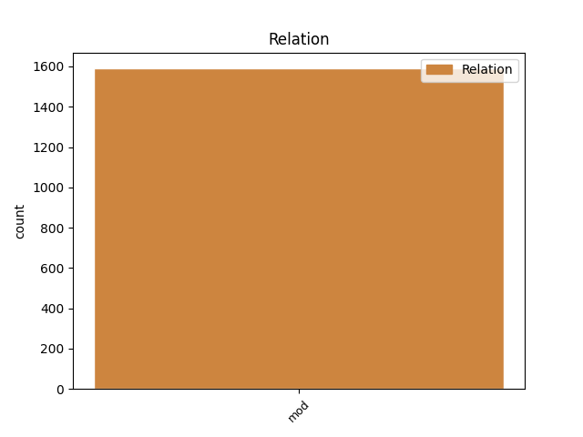
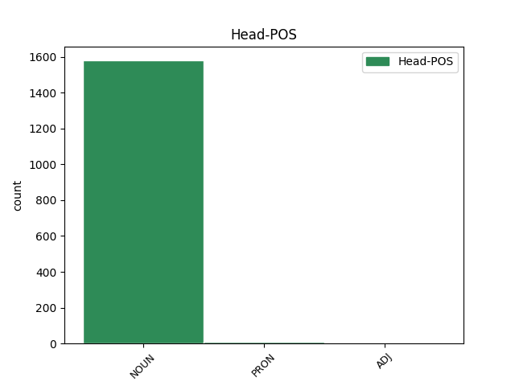
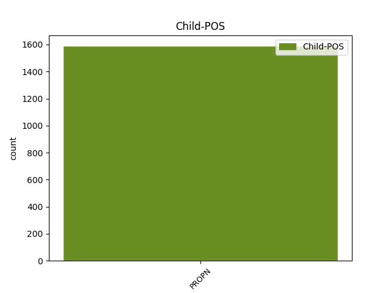

Distribution of features within this leaf



Agreement Rules sorted by frequency.
- When the dependent token is the modifer(mod) of the head token, and the head token is NOUN and the dependent token is PROPN.
1 Der _ _ _ _ 0 _ _ _
2 Bühler Bühler PROPN ADJA Case=Nom|Gender=Masc|Number=Sing 3 mod _ _
3 Oberlehrer Oberlehrer NOUN NN Case=Nom|Gender=Masc|Number=Sing 0 _ _ _
4 Otto _ _ _ _ 0 _ _ _
5 Greule _ _ _ _ 0 _ _ _
6 ( _ _ _ _ 0 _ _ _
7 † _ _ _ _ 0 _ _ _
8 1970 _ _ _ _ 0 _ _ _
9 ) _ _ _ _ 0 _ _ _
10 verhalf _ _ _ _ 0 _ _ _
11 der _ _ _ _ 0 _ _ _
12 damals _ _ _ _ 0 _ _ _
13 größten _ _ _ _ 0 _ _ _
14 katholischen _ _ _ _ 0 _ _ _
15 Kirchenorgel _ _ _ _ 0 _ _ _
16 Badens _ _ _ _ 0 _ _ _
17 insbesondere _ _ _ _ 0 _ _ _
18 durch _ _ _ _ 0 _ _ _
19 sein _ _ _ _ 0 _ _ _
20 konzertantes _ _ _ _ 0 _ _ _
21 Spiel _ _ _ _ 0 _ _ _
22 zu _ _ _ _ 0 _ _ _
23 überregionaler _ _ _ _ 0 _ _ _
24 Berühmtheit _ _ _ _ 0 _ _ _
25 . _ _ _ _ 0 _ _ _
1 Steinstatuen _ _ _ _ 0 _ _ _
2 aus _ _ _ _ 0 _ _ _
3 Raivavae _ _ _ _ 0 _ _ _
4 befinden _ _ _ _ 0 _ _ _
5 sich _ _ _ _ 0 _ _ _
6 heute _ _ _ _ 0 _ _ _
7 in _ _ _ _ 0 _ _ _
8 dem _ _ _ _ 0 _ _ _
9 Bernice _ _ _ _ 0 _ _ _
10 P. _ _ _ _ 0 _ _ _
11 Bishop _ _ _ _ 0 _ _ _
12 Museum _ _ _ _ 0 _ _ _
13 , _ _ _ _ 0 _ _ _
14 Honolulu _ _ _ _ 0 _ _ _
15 , _ _ _ _ 0 _ _ _
16 Hawaii _ _ _ _ 0 _ _ _
17 , _ _ _ _ 0 _ _ _
18 in _ _ _ _ 0 _ _ _
19 dem _ _ _ _ 0 _ _ _
20 Musée _ _ _ _ 0 _ _ _
21 de _ _ _ _ 0 _ _ _
22 Tahiti _ _ _ _ 0 _ _ _
23 et _ _ _ _ 0 _ _ _
24 des d PRON ART Case=Gen|Definite=Def|Gender=Neut|Number=Sing|PronType=Art 0 _ _ _
25 Îles Îles PROPN NN Case=Gen|Gender=Neut|Number=Sing 24 mod _ _
26 bei _ _ _ _ 0 _ _ _
27 Papeete _ _ _ _ 0 _ _ _
28 und _ _ _ _ 0 _ _ _
29 in _ _ _ _ 0 _ _ _
30 dem _ _ _ _ 0 _ _ _
31 Pitt _ _ _ _ 0 _ _ _
32 Rivers _ _ _ _ 0 _ _ _
33 Museum _ _ _ _ 0 _ _ _
34 , _ _ _ _ 0 _ _ _
35 Oxford _ _ _ _ 0 _ _ _
36 . _ _ _ _ 0 _ _ _
Disagree Examples:
1 Für _ _ _ _ 0 _ _ _
2 eine _ _ _ _ 0 _ _ _
3 300 _ _ _ _ 0 _ _ _
4 Euro Euro PROPN NN Case=Acc|Gender=Neut|Number=Plur 6 mod _ _
5 teuere _ _ _ _ 0 _ _ _
6 Torte Torte NOUN NN Case=Nom|Gender=Masc|Number=Plur 0 _ _ _
7 von _ _ _ _ 0 _ _ _
8 einem _ _ _ _ 0 _ _ _
9 angeblichen _ _ _ _ 0 _ _ _
10 Meisterkonditor _ _ _ _ 0 _ _ _
11 war _ _ _ _ 0 _ _ _
12 das _ _ _ _ 0 _ _ _
13 einfach _ _ _ _ 0 _ _ _
14 nur _ _ _ _ 0 _ _ _
15 furchtbar _ _ _ _ 0 _ _ _
16 -- _ _ _ _ 0 _ _ _
17 die _ _ _ _ 0 _ _ _
18 gelieferte _ _ _ _ 0 _ _ _
19 Torte _ _ _ _ 0 _ _ _
20 hatte _ _ _ _ 0 _ _ _
21 keinerlei _ _ _ _ 0 _ _ _
22 Ähnlichkeit _ _ _ _ 0 _ _ _
23 mit _ _ _ _ 0 _ _ _
24 dem _ _ _ _ 0 _ _ _
25 Bild _ _ _ _ 0 _ _ _
26 der _ _ _ _ 0 _ _ _
27 Torte _ _ _ _ 0 _ _ _
28 die _ _ _ _ 0 _ _ _
29 wir _ _ _ _ 0 _ _ _
30 haben _ _ _ _ 0 _ _ _
31 wollten _ _ _ _ 0 _ _ _
32 ( _ _ _ _ 0 _ _ _
33 welches _ _ _ _ 0 _ _ _
34 wir _ _ _ _ 0 _ _ _
35 ihm _ _ _ _ 0 _ _ _
36 ja _ _ _ _ 0 _ _ _
37 überlassen _ _ _ _ 0 _ _ _
38 hatten _ _ _ _ 0 _ _ _
39 ) _ _ _ _ 0 _ _ _
40 . _ _ _ _ 0 _ _ _
1 Wir _ _ _ _ 0 _ _ _
2 hatten _ _ _ _ 0 _ _ _
3 für _ _ _ _ 0 _ _ _
4 unser _ _ _ _ 0 _ _ _
5 Fußballferiencamp Fußballferiencamp NOUN NN Case=Acc|Gender=Neut|Number=Sing 0 _ _ _
6 der _ _ _ _ 0 _ _ _
7 DJK DJK PROPN NN Case=Gen|Gender=Fem|Number=Sing 5 mod _ _
8 Allersberg _ _ _ _ 0 _ _ _
9 Pokale _ _ _ _ 0 _ _ _
10 bestellt _ _ _ _ 0 _ _ _
11 . _ _ _ _ 0 _ _ _
1 Ist _ _ _ _ 0 _ _ _
2 ein _ _ _ _ 0 _ _ _
3 kleines _ _ _ _ 0 _ _ _
4 idylisches _ _ _ _ 0 _ _ _
5 Städtchen _ _ _ _ 0 _ _ _
6 an _ _ _ _ 0 _ _ _
7 dem _ _ _ _ 0 _ _ _
8 Rande Rand NOUN NN Case=Dat|Gender=Masc|Number=Sing 0 _ _ _
9 des _ _ _ _ 0 _ _ _
10 Emmenthals Emmenthals PROPN NN Case=Gen|Gender=Masc|Number=Sing 8 mod _ _
11 und _ _ _ _ 0 _ _ _
12 direkt _ _ _ _ 0 _ _ _
13 an _ _ _ _ 0 _ _ _
14 der _ _ _ _ 0 _ _ _
15 Luzerner _ _ _ _ 0 _ _ _
16 Grenze _ _ _ _ 0 _ _ _
17 . _ _ _ _ 0 _ _ _
1 Nett _ _ _ _ 0 _ _ _
2 , _ _ _ _ 0 _ _ _
3 kompetent _ _ _ _ 0 _ _ _
4 und _ _ _ _ 0 _ _ _
5 dazu _ _ _ _ 0 _ _ _
6 noch _ _ _ _ 0 _ _ _
7 in _ _ _ _ 0 _ _ _
8 dem _ _ _ _ 0 _ _ _
9 Herzen Herz NOUN NN Case=Dat|Gender=Neut|Number=Sing 0 _ _ _
10 Müggelheims Müggelheims PROPN NE Case=Gen|Gender=Neut|Number=Sing 9 mod _ SpaceAfter=No
11 . _ _ _ _ 0 _ _ _
1 Ich _ _ _ _ 0 _ _ _
2 möchte _ _ _ _ 0 _ _ _
3 mich _ _ _ _ 0 _ _ _
4 für _ _ _ _ 0 _ _ _
5 die _ _ _ _ 0 _ _ _
6 Hilfe _ _ _ _ 0 _ _ _
7 des _ _ _ _ 0 _ _ _
8 Teams Team NOUN NN Case=Gen|Gender=Neut|Number=Sing 0 _ _ _
9 der _ _ _ _ 0 _ _ _
10 Mentor Mentor PROPN NN Case=Nom|Gender=Masc|Number=Sing 8 mod _ _
11 Coaching _ _ _ _ 0 _ _ _
12 bedanken _ _ _ _ 0 _ _ _
13 . _ _ _ _ 0 _ _ _